Matigsalug Manobo Healthbooks
Previous Healthbook Up to main Healthbooks page Next Healthbook
Vernacular Lexicon
A
B
BAP
BL
D
E
G
H
I
K
KI
L
LA
LIP
M
N
O
P
PA
R
S
SE
SIN
T
TE
TIN
U
V
W
Y
Z
Healthbooks
Nakapangananey ensi Junjun wey si Iwayan te sabekan maselem te peg-enew ran su migmasakit ka getek dan wey mig-iindes.
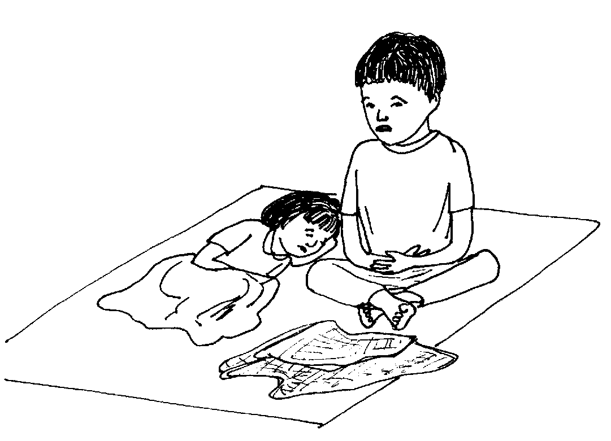
Seeye se miglihad ne aldew, migpamanihus dan duma te me sumbaley ran diye te weyig, ne nekeinum e sikandan dutu ne weyig te pegpamanihus dan.
Ne seeye degma ne weyig ka indesanan wey ihianan te me etew te seeye ne bariyu.
Pegkapenga ni Iwayan te miggendiye te liyuan ka mig-iindes, ware din nakapanlu-lu te belad din su nalingew rin.
Ne nataman, inggalew rin ka hari rin wey impeem-em din ka kemel rin te hari rin.
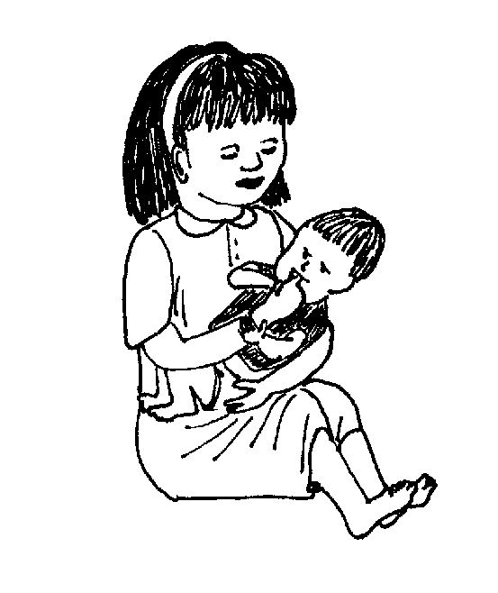
Te ware naluhey, mig-iindes e degma ka hari rin.
Nalaggew amana ka iney ran ne si Lolita.
Ne migkahi sikandin diyet asawa rin ne si Inuk te, “Egmangiindes man-e ka me anak ta.
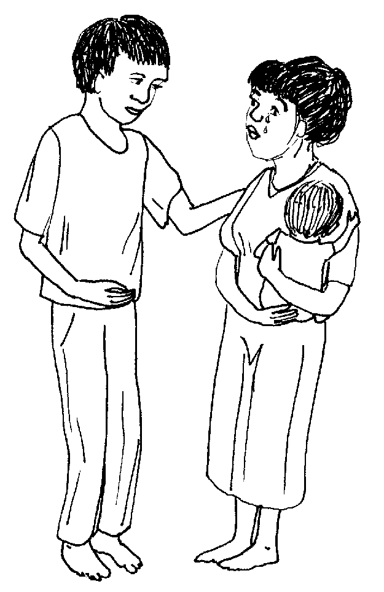
“Masalig pe ma ka nammatey kayi te kantan bariyu puun te seinin dalu.
“Ne nekey naan e kag gimuwen ku?”
Ne migkahi si Inuk te, “Ka ispurtanti neg gimuwen nu ke dueg iindes, keilangan neg peinumen nu te dakel ne weyig.”
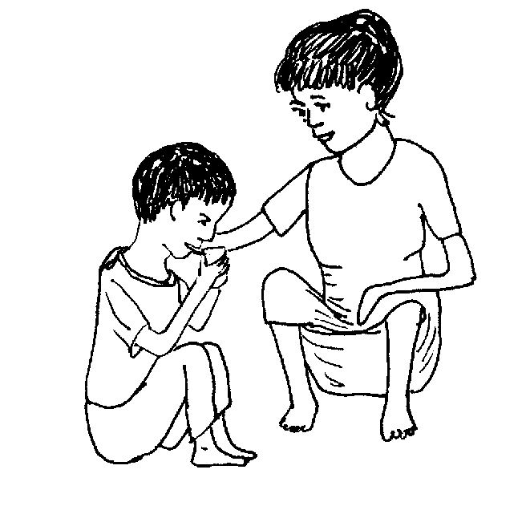
Migpabulus din ka migkahi te, “Keilangan neg kabullasan te weyig ka lawa rin ne naawaan te weyig puun te migmalamiyak ne tei su emun ke keneg inum, egmammare e ka lawa rin.
“Egpatey ki keg mammare e ka lawa ta su ka lawa ta egweweyig ma.
“Ne labi e ke dakel ne weyig kag kaawe, puun te mig-iindes.”
Induman Inuk sikandan te miglihawang wey impapitew rin kandan ka bulak ne nahangu puun te keinit te aldew.
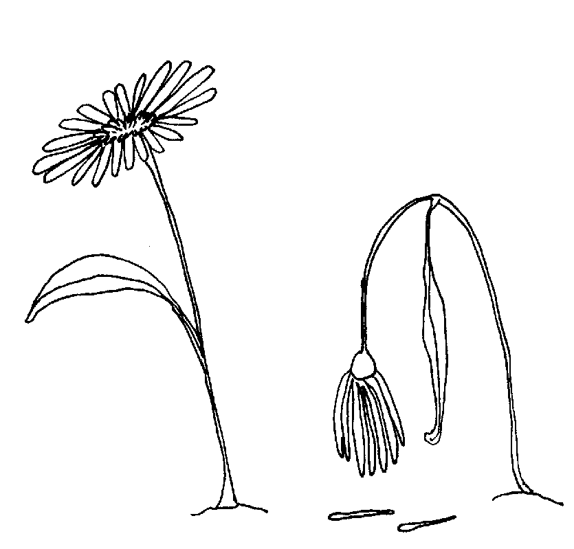
Ne impeg-iling din te ware nahangu ne bulak.
Ne migkahi si Inuk te, “Ka lawa ta, egpekeiling te bulak ne ware nahangu, piru ke egkaawaan te weyig ka lawa ta, egpekeiling ki te bulak ne nahangut aldew.
“Egpatey ki iling te bulak tenged su kenen eleg ka weyig kayit lawa ta.”
Ne migpabulus si Inuk ka migkahi te, “Keilangan Lolita neg pasusuwen nu ka bate.
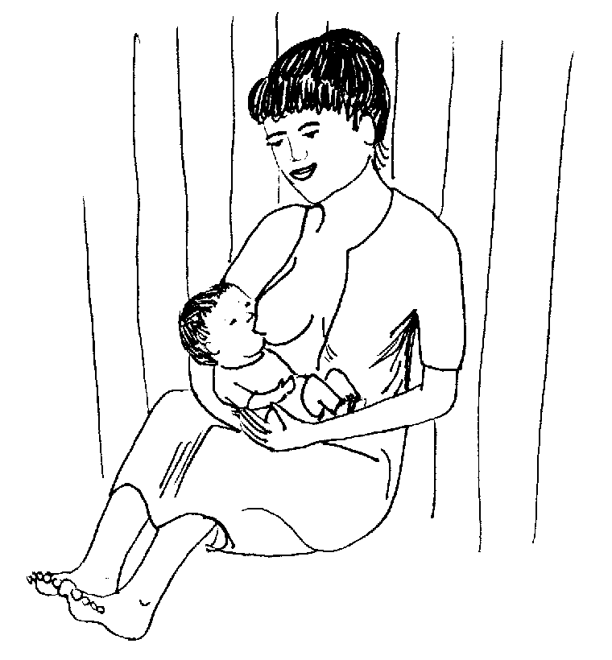
“Kene kag engked kag pasusu su seini ka egpakameupiya te bate.”
Ne migkahi sikandin te, “Ka me bate wey ka me buyag e neg iindes, keilangan neg peinumen ta sikandan te dakel wey malinis ne weyig.
“Keilangan neg-inum dan te weyig te keep-at wey ke kalalimma tagse uras te maaldew wey marusilem.
“Peinuma nu te me sitrus wey sabew ke egkeupian dan neg inum.”
Ne mig-inse si Lolita te, “Etuwey keg ileben dan?”
Ne migtabak si Inuk, “Pabulusi nu teg peinum taman te kenad eg-iindes. Ne emun ke kene nug tigkanen teg peinum, kene dan ded eg-ileben su deisek man de ka egkeinum dan.”
Ne mig-inse si Lolita, “Hendei taman sikandan kag peinumen?”
Ne migtabak ka asawa rin te, “Keilangan ne wey nud e penpeneki teg peinum ke kenad eg-iindes. Ne emun keg pekeihi e sikandan wey ke kenad egkammaraan, eleg naan e ka weyig diyet lawa ran.”
Ne mig-inse si Lolita te asawa rin te, “Ke keneg keen ka me bate, kema ke egpakarereet kandan?”
Ne migtabak si Inuk te, “Emun keg gutasan dan wey ke egkeupian neg keen, pakeena nu sikandan te me memewumel iling te sahing wey binulalu.
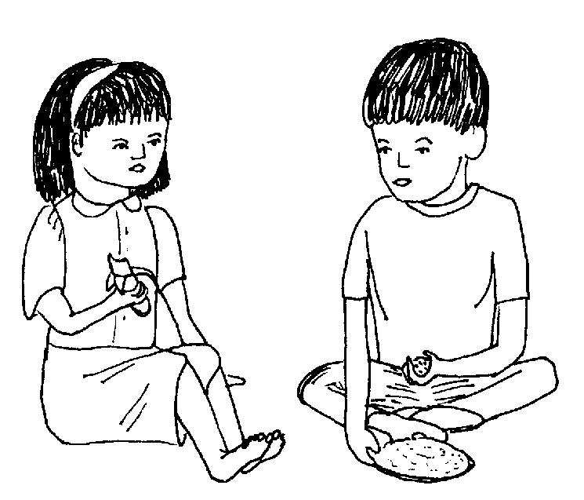
“Piru kene niyu pehesa teg pakeen ke kene dan egkeibeg neg keen su kene dan egkamenu ke kene dan egkeen.
“Piru wey re egpatey ke keneg pekeinum te weyig.
“Purisu ka eg-inum te weyig ka ispurtanti kuntere te egkeen.”
Dutu egpuun, layun egpeinuma ni Lolita ensi Junjun wey si Iwayan te weyig.
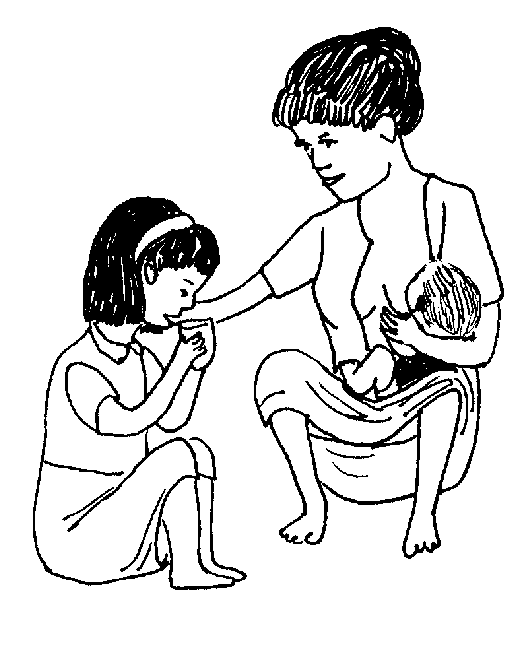
Wey migpabulus din ka migpasusu te bate.
Seeye ne timpu, neulian e si Junjun wey ka bate, piru si Iwayan, ware pad neulii ka eg-iindes.
Te pegkakita ni Inuk te ware pad neulii si Iwayan kag iindes, ingkahiyan din e ka asawa rin te, “Emun keg pabulus pad neg iindes si Iwayan, sublan dakel ne asin kag kaawe diyet kandin wey iling ded degma ka weyig.
“Keilangan neg peinumen ta sikandin te inumen neg ngaranan te urisul eyew igliwan te asin wey weyig neg kaawe diyet lawa rin.”
Ne migkahi si Inuk te, “Ka urisul, kenen malehen neg gimuwen su egpekeyimu ka tagse sabeka diyet baley ran.
“Eg-ilingen ded seini te hun-a, egdeiseken de teg peinum piru keep-at wey ke kalalimma tagse uras, maaldew wey marusilem, taman te egkeulian e ka eg-iindes.”
Ne migkahi si Inuk te, “Eg-ilingen kayi teg andam ka urisul.
“Te an-anayan, kuwa ka te hep-at ne basu te malinis ne weyig. Amuti nu te tatelun pindut ne asin wey daruwan kem-kem ne asukal wey ke teneb.
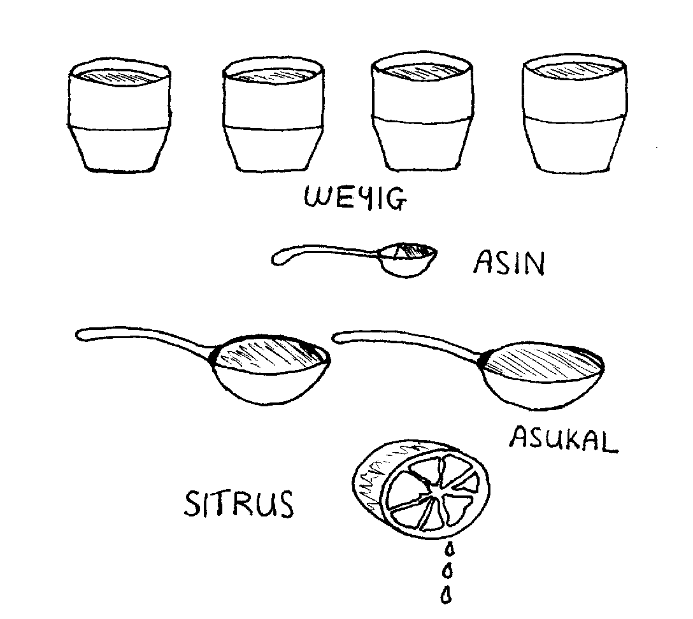
“Emun ke kenen malinis ka weyig, keilangan ne pakalkalaan pa seled te sabeka re ne minutus wey peyibawanan pa.”
Ne migpabulus din ka migkahi te, “Neg kataman, gerami nu teg inum, egpekeiling ka nanam din te luwe.
Kahin Inuk man-e te, “Egkaayun degma ka sabew te hemey, piru ke hep-at ne basu te sabew te hemey keilangan neg amutan pad te tatelun pindut ne asin.”
Migpanginsaan ni Inuk ka me bate ne miggenendue te, “Migpanlu-lu kew red te me belad niyu iling te ingkahi ku kaniyu?”
Migpanginsaan din man-e ke migpeendei ran wey ke hendei nangeen wey nanginum.
Ne migpangguhuran dan si Inuk meyitenged te pegpamanihus dan diyet weyig wey peg-inum dan te seeyen weyig.
Henduen pad nakasuman-suman si Iwayan te ware din bes nakapanlu-lu te belad din te pegkeimpus din ka mig-indes wey te peggalew rin te bate ne ware lu-lu te belad din.
Ne migkahi si Inuk te, “Igpangguhud ku ke nekey ka neyitabu diyet kaniyu.
“Kag iindes, egpuun te kahew ne egseled diyet bituka ke egpakakeen ki wey egpekeinum ki te kenen malinis, wey ke egkahat ki te minsan nekey ne kenen malinis iling te belad ne impeem-eman ne ware nalu-lui.
“Egkaangey ta ka kahew emun ke eg-inum ki te malindit ne weyig. Te nekeimpus ka ka mig-indes, nakapaalin nu ka kahew ne diyet belad nu diye te bate ne inggalew nu.”
Ne migkahi si Lolita te, “Pangguhuri key man-e ke nekey ka eggimuwen ta eyew kene kid egpangiindes.”
Ne migkahi si Inuk te, “Keilangan ne malinis ka egkeenen wey ka weyig neg inumen ta. Ka uran ne weyig wey ka sebseb, malinis, piru ke kenen siguru ne malinis, keilangan neg pakalkaleen pad seled te lalimma ne minutus su egpatey ka kahew ke egkale-kale e ka weyig.
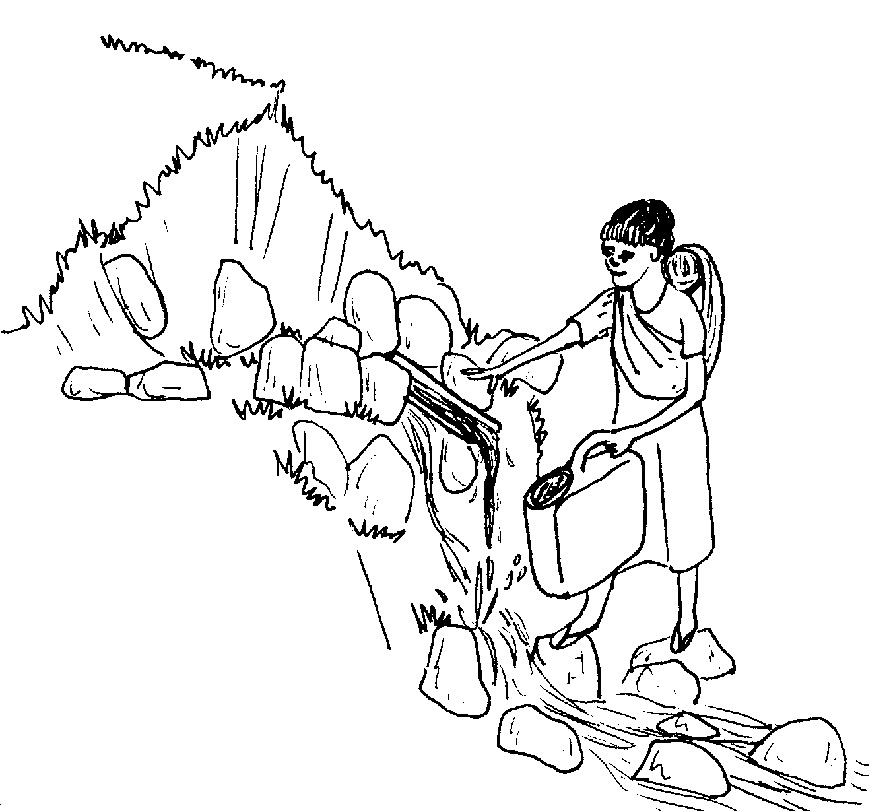
“Keilangan ne kene ki eg-inum te malindit ne weyig iling te egkein-indesan e wey egkeig-ihian e te me etew gawas ke egpakalkaleen pad ne hendue neg inumen.”
Ne migpabulus si Inuk ka migkahi te, “Eglu-luan ta ka egkeenen te malinis ne weyig. Eg-upianan ta teg egsusubba wey egkeenen ta mintaras te meinit pad. Egpatey ka me kahew ke egsubbeen ka keenen.”
Kahi ni Inuk, “Kene tag palatunan te langew kag keenen wey te minsan nekey ne me uled.”
Ne migpabulus si Inuk ka migkahi, “Ka pegpanulu te duktul kanami te me health workers meyitenged te peg-iindes, ingkahiyan key nikandin te kenen keilangan ka tablitas ne igpeinum ke dueg iindes su marelag de neg pakabulig, wey egpakahastu re kanta te seleppi.
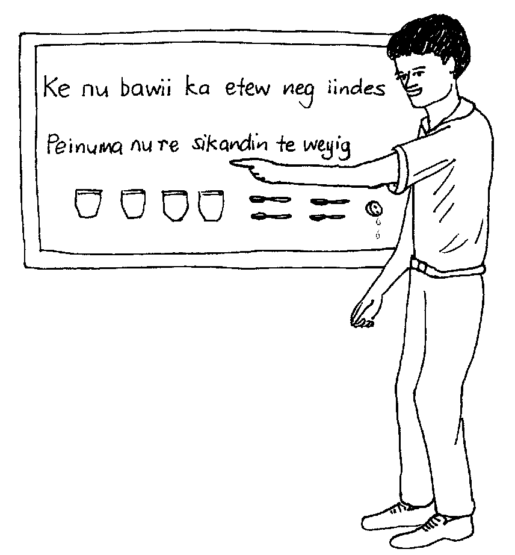
“Ka peg-inum de te weyig ka impanulu, su weyig ma kag kaawe kayit lawa ta emun ke eg-iindes ki, wey egpakeenen degma emun keg gutasan.”
Migpabulus si Lolita ka migpeinum ki Iwayan te urisul taman te neulian e ka eg-iindes.
Te katammanan, neulian e langun ka me anak dan ne migmangiindes.
Mania te mahaan egpakapatey kag iindes?
Nekey-a ka ispurtanti neg sumsumanen ta neg gimuwen ke due eg-iindes?
Hendei taman kag peinum teg pangiindes?
Nekey-a ka urisul, wey egmenuwen-a teg gimu?
Nekey-a ka eggimuwen ta eyew kene ki eg-iindes?
Keilangan naa neg inum ki te tablitas keg iindes ki? Mania?
Emun keg iindes ki, egkaawaan ka lawa ta te weyig wey egmammara. Seini kag puunan ne mahaan egpatey ke dueg iindes. (Lukib 71)
Keilangan ne layun eg-inum te weyig aldew wey marusilem. Wey duma pad neg keinum. (Lukib 71, 75, 76) Keilangan neg pabulus kag pasusu te me bate keg iindes sikandan. (Lukib 75)
Peinuma niyu ke dueg iindes taman ke egpekeihi e sikandin wey ke kenad egkammaraan. (Lukib 77)
Ka urisul ka igliwan te asin wey weyig ne naawe te timpu teg iindes. Wey te re eggamita seini ke dueg masumpit neg iindes wey ke suble e te sabekan aldew. (Lukib 83) Ka peggimu kayi, egpegsewuhen ka tatelun pindut ne asin te daruwan kem-kem ne sukal wey ke teneb te hep-at ne basu te malinis ne weyig. Wey egkaayun man-e ne iyan eggamiten ka sabew te hemey ne hep-at ne basu wey tatelun pindut ne asin. (Lukib 85)
(a) Keilangan neg panlu-lu ki te me belad pekeimpus kag indes wey eg-ihi wey te kene pad egkeen wey eg-andam te keenen. (Lukib 87)
(b) Keilangan ne keneg keen wey eg-inum te malindit. (Lukib 89)
This page last updated: 03-Jan-2020
Copyright © 2009-2010